Creation is fun. How to create for creating creations?
This building block is designed with my own vision on what I used to like as a kid and what I
need today.
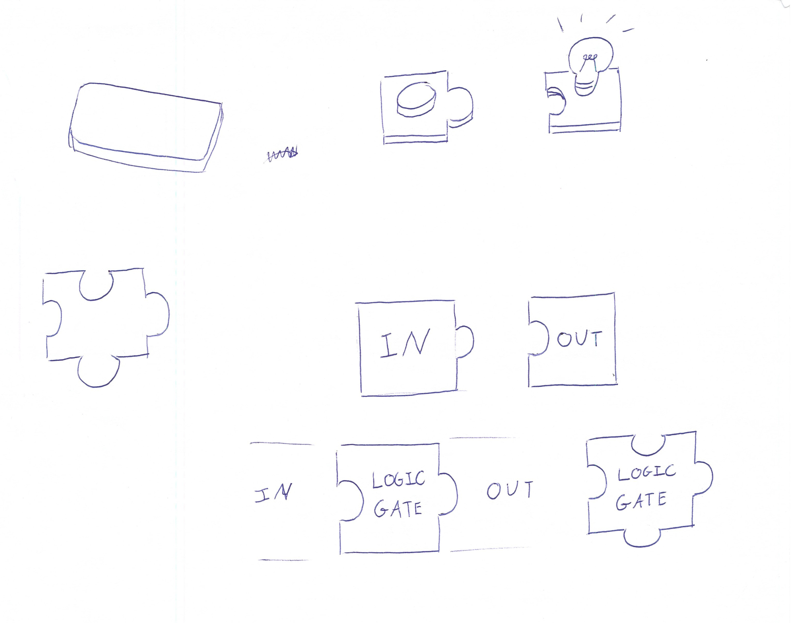
01Context & Epitaph
The original idea
As the fascination grew bigger for electronics, and mechanical structures, I would have liked to
design for a building block that would combine all these building blocks. However, those toys
already existed within the great 3D printing community. So, I did not let it take me down and
explored many other ideas.
The End
As my fascination for electronics will never go away, I designed for low-level logic. One of the
puzzles in electronics is how to setup a logical gate. With a big detour, I ended up getting
back at the beginning...
Let's dive into it!
02Sketching & Prototype
At first, a few warmup sketches. As I didn't have the logic gates yet in
mind... What should I design for? Many Ideas came to mind I outputted both electronical and
mechanical toys.
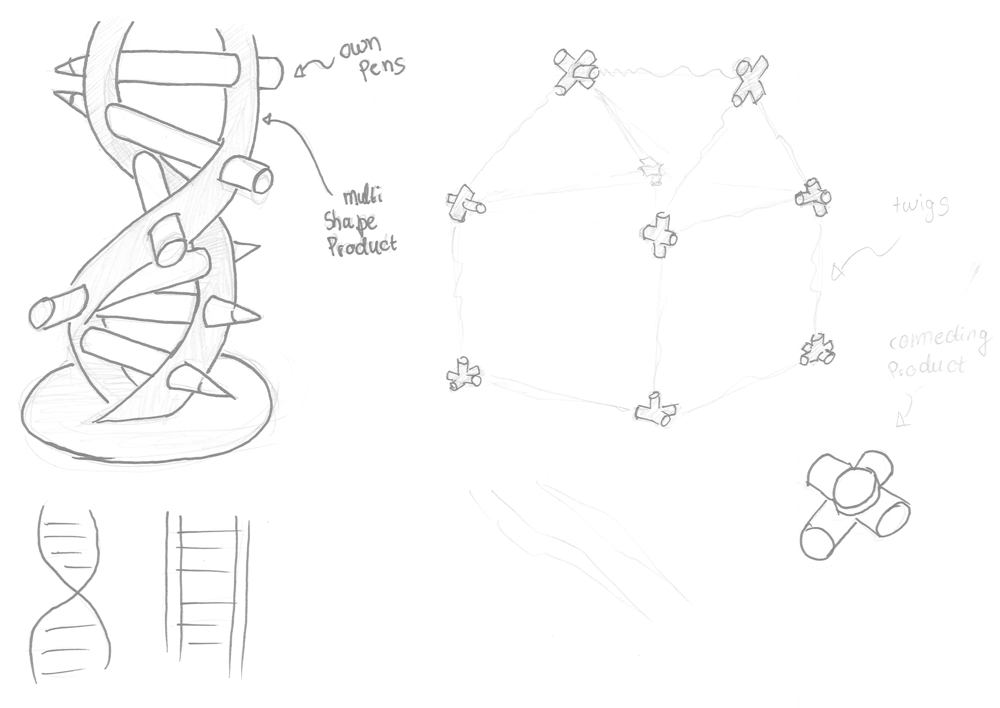
Sticks Combiners with pens or forest sticks
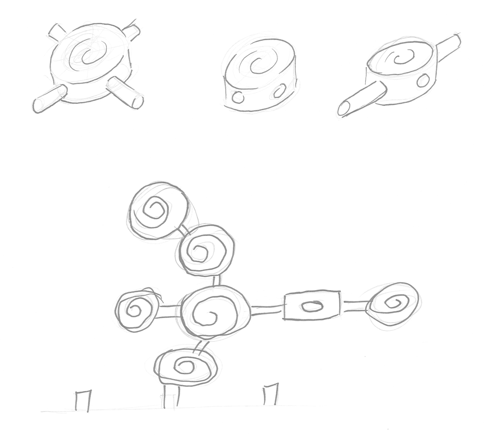
Wooden Disk Combiners as connecting point
First Sketches
The purpose of these sketches is to play with already simple ideas, but then
give a new flavor or twist on them.
Sticks Combiners
As hot glue guns are used a lot in crafting, and are quite... permanent... I was looking for
a reusable option or an option that is at least less permanent. Hence, the sticks combiners.
With designing for a sustainable toy, I thought: we should do the sticks from the
forest! The only drawback is that each stick is not... a mathematical (long) cylinder and
that not all sticks have the same thicknessess... An interesting designchallenge, bit sadly
I lost momentum for this idea.
Wooden Disk Combiners Thinking further on reusing sticks, I was looking into thinker logs, logs that a person could
cut/saw in smaller disks (with defined width) and then this 'thinkering product' would combine these
wooden diks together. Sadly, it isn't safe for a child, or any unresponsible person of any age, to
chop wooden disks in the woods. Ofcourse, it is possible and can be done in a supervised way, but
that is not the learning goals I would like to go for. The aim is to have a ready-to-use item, that
doesn't contain missing pieces in this way. A way that could be dangerous to retrieve for some...
Moving on...!
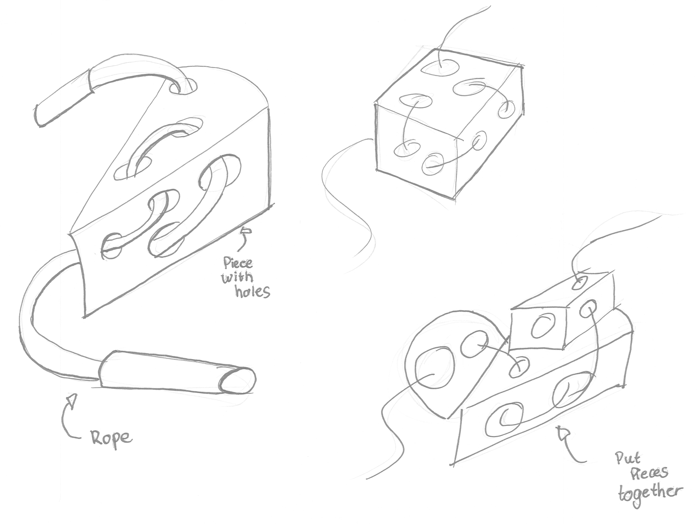
Rope Puzzle
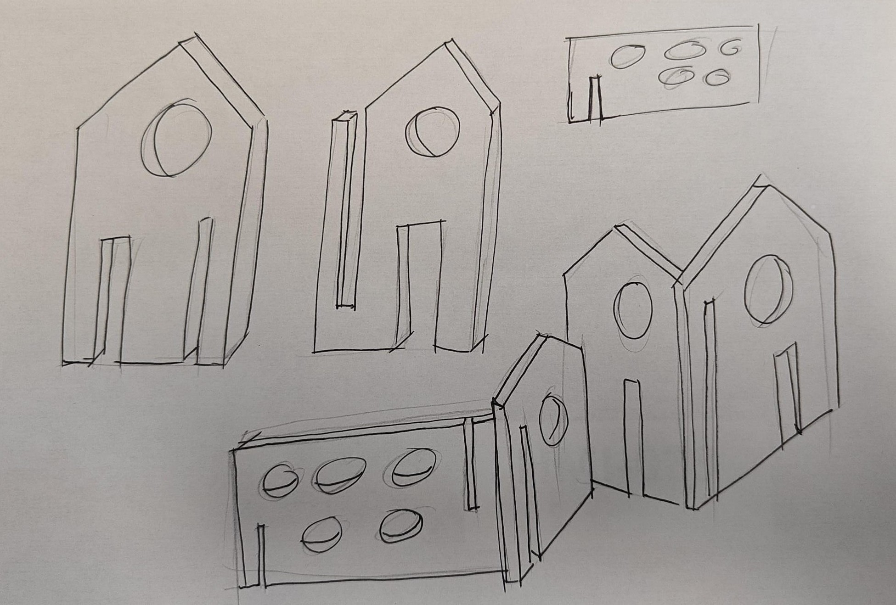
Modular City
First Sketches
The purpose of these sketches is to play with already simple ideas, but then
give a new flavor or twist on them.
Rope Puzzle
For this idea, the shape consists of holes. These holes will be the foundation of connecting the
other pieces together. The rope will go through the holes, which can become different combinations.
These combinations create for multi variability. However, as I put in my material table, this
product would not be very expressive or have an educational value. Hence, this idea is discontinued.
Modular City As the previous idea became too complicated as a 3D object, I began to combine 2D images into a
3D space. Based on the concept of building blocks that are lasercut, I began to look more into
stackign shoving pieces together in a repetitive manner. With multiple shapes and houses, this could
create a bigger storytelling scene, such as cities or landscapes.
Looking at my material table, open endeddness and free play does exist in this shape, but
the pieces wouldn't apply to other world settings outside of this context. The pieces have too much
of an own context, which indeed looks friendlier, but does not still have the shine I was looking
for. I was looking for more pieces that could still be used outside of its functionality in its own
context. And no, not a pieces that would look only good as decoration outside its own context.,.
Which meant I eventually shifted to even more fundamental
pieces. These pieces were more abstract and indeed more of a building block.
Logic Catapillar
This logic toy was inspired by programming and how variables work in a code. This indeed used more
fundamental pieces in which their logic can be used more outside of their own context. These parts
are
variable meaning that one can redefine what the value is of this variable. In this case the
variable will be the direction or moving behavior of the catapillar: the catapillar will then be
defined by its pieces, as preset sequences.
But then, reality kicked in. With a real version of this idea already: Fisher-Price's
Think & Learn Code-a-pillar. So yeah... Going back to the drawing table again.
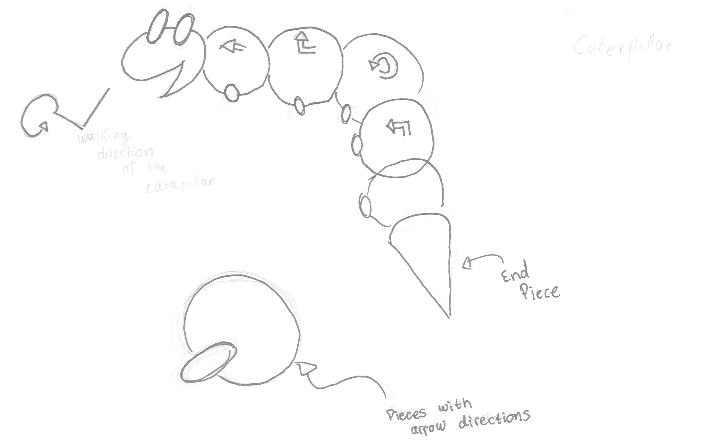
My amazing sketh of my idea...
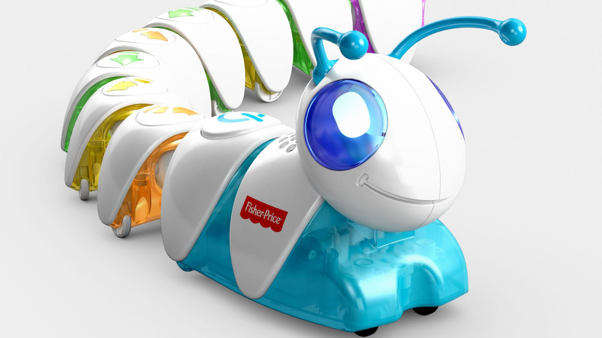
Fisher-Price's Think & Learn Code-a-pillar...
Logic Toy
The programming logic captivated me, but with what metaphor to choose?
Then with hardware in
mind, a new concept emerged. Microcontrollers and the concept of electricpulses is all defined by
switches, logic gates. Very logic components (pun-intended) are the building blocks
(pun-intended). Therefore, the building logic gates building blocks. Below the square and the
rectangle version of the first shape design.
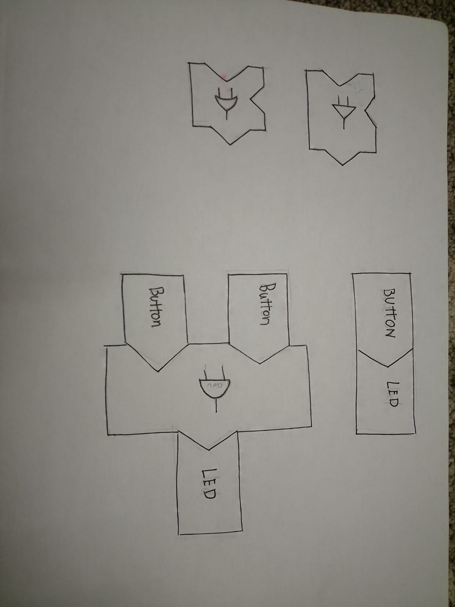
Pieces with Logic connections
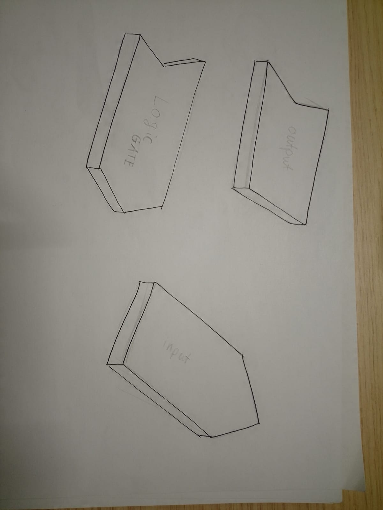
Logic connections in especial rectangular shape.
04Physical Realization & Interoperability
All sketches were based on a 2D principle for this idea. However, to realize this product, a third
dimension should be added to make it applicable in the real world. Even if it would be an extrustion
of this, a thrid dimension should be somehow added.
Designing for only the output could have many potential shapes already
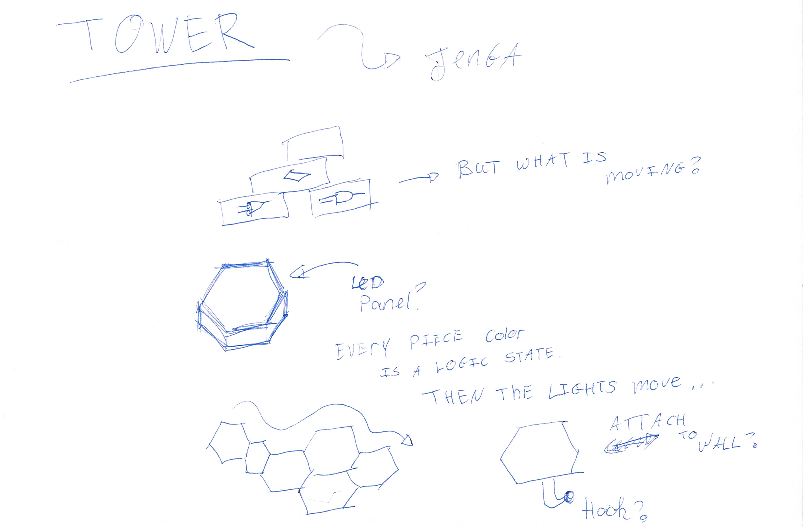
Here trying to figure out where the internal functionality of my building block and the
outer perpose/functionality of the building block to the userMaking it even more complicated...: adding the functionality of the inverted inputs in
logic gates. A construct too complicated for the building block right now.
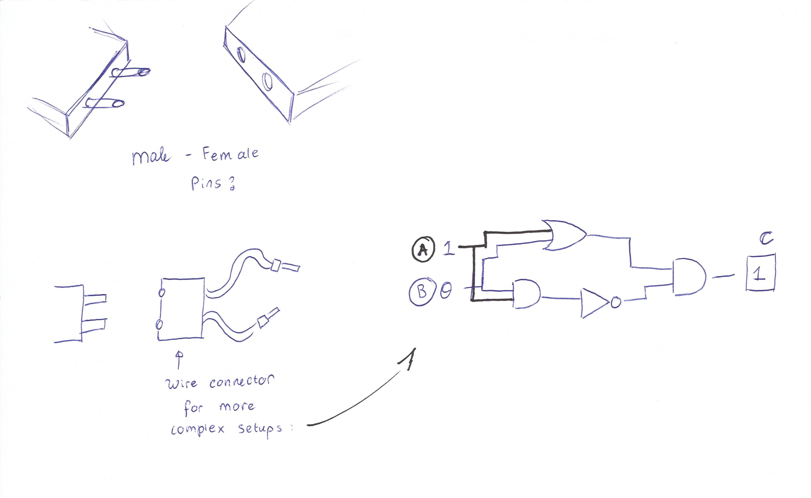
Eventually, the shape will be an extruded 2D shape (block or hexagon). Originally, all
the pieces should be clickable together, but sometimes pieces overlap each other. Hence, the
wires with headphonejacks to have connections cross each other.
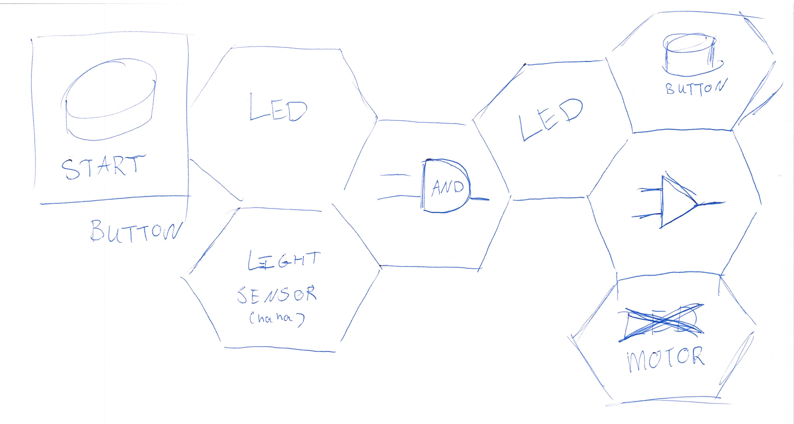
The hexagons started to grow on me, since it can have 3 inputs and 3 outputs (in
comparison to a square with 2 inputs and 2 outputs)
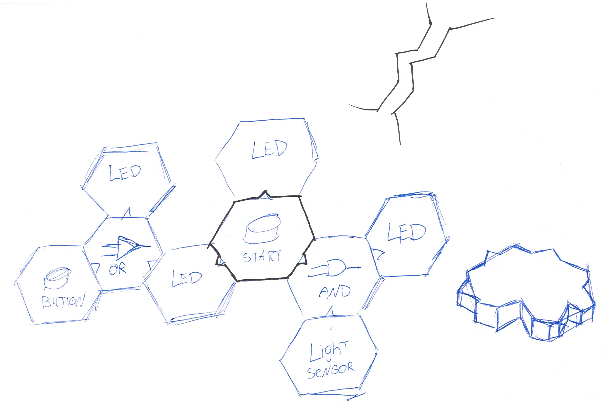
To not create misunderstandings, the shape or plugs for a input tile and a output tile
should be tactile different (e.g. Little bits solves this by the polarisation of magnets)
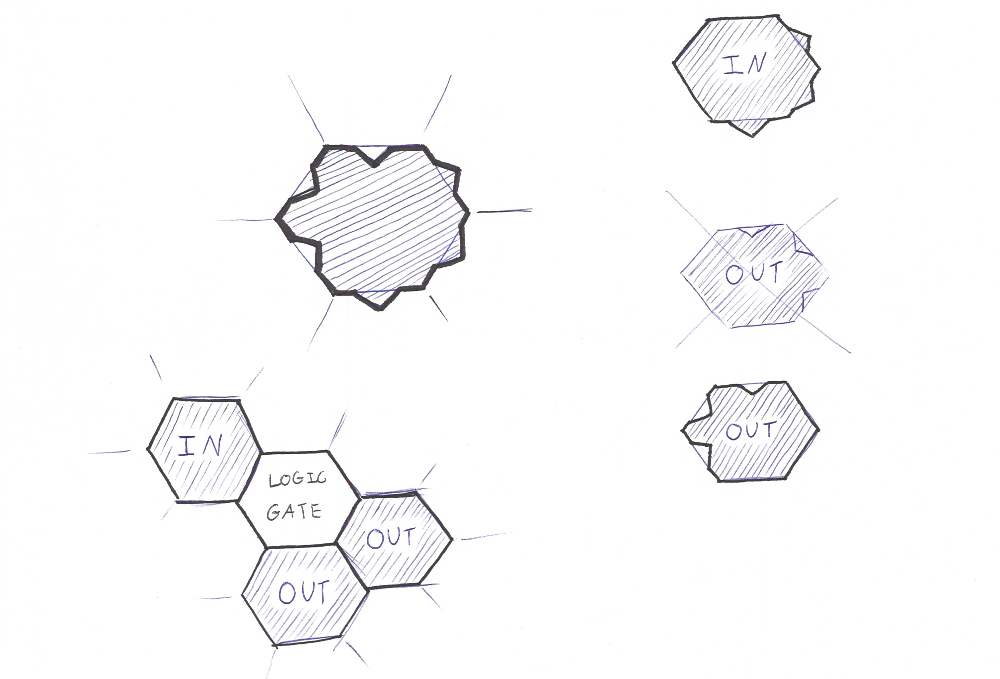
The final version for this tile is with three inouts and three outputs for logic gates,
three outputs for an IN-tile and three inputs for an OUT tile
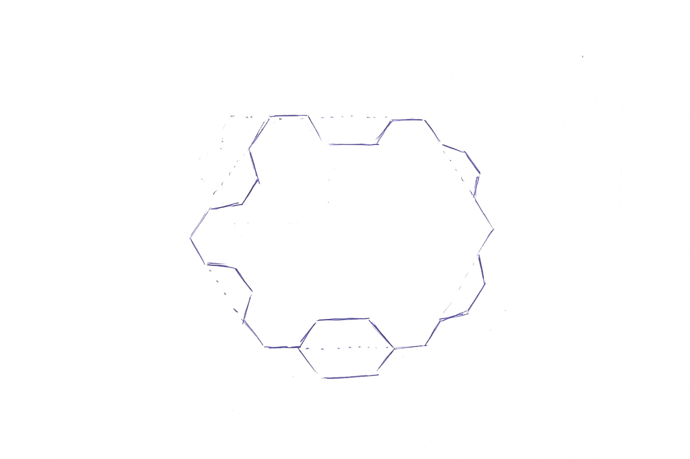
A variation for this piece would be to have the logic gates a bigger size than the other
input and output pieces... However, for the 'equality' of the pieces, this felt incoherent and
out of scope
Prototype Design
Working on a 3D model for these shapes, was a fast way of prototyping. The pieces were flat, to keep
a top-overview of the pieces, such that the user could see all the information on the front (or
actually top) side of the building block.
Main pieces
4 Version of these building block version will have a different
experience.
V1.1 Square Building Blocks Version
These pieces look very sharp in the digital image, meaning they can feel quite agressive.
The square shape is to keep it possible to that the building block can be rotated and
still have a grid-appearance.
V1.2 Rectangle Building Blocks
The rectacle interface for the pieces create more space for logos and potential
explanations. It provides a more logical arrow on which directions the input tiles start
and where the output tiles end. (The square shapes are less associated with arrows.)
V2 Puzzle Pieces
The puzzle pieces provided more of a friendlier interface, meaning that the puzzle
communicated a less overwhelming appreance to new users. Eventually, engraving the logic
gate logos on the pieces gave it a way different look. A look not so fiendly to the
user.
V3 Hexagonal Pieces
After fanatically playing with Catan pieces, hexagonal shapes slowly started to grow on
me. Hexagonal shapes are used a lot in nature too and the shape allows for just a bit
more in- and output ports. The logic gate in the middle will have three pins in and out
of the block, just like the previous pieces. However, as the schematic sketches didn't
account for the click-mechansm, the sketches looked very satisfying in terms of
structure. The piece itself gave me some questionmarks, but the prints should then
either deny or proof my point.
Prototype Print
As I slowly started to see the 3D printer more as a tool, (than a challenge in terms of the tinkering
space), I managed to print the pieces in 3D with as less technical hurdles as possible. The prints
all fit on this 3D printer plate.
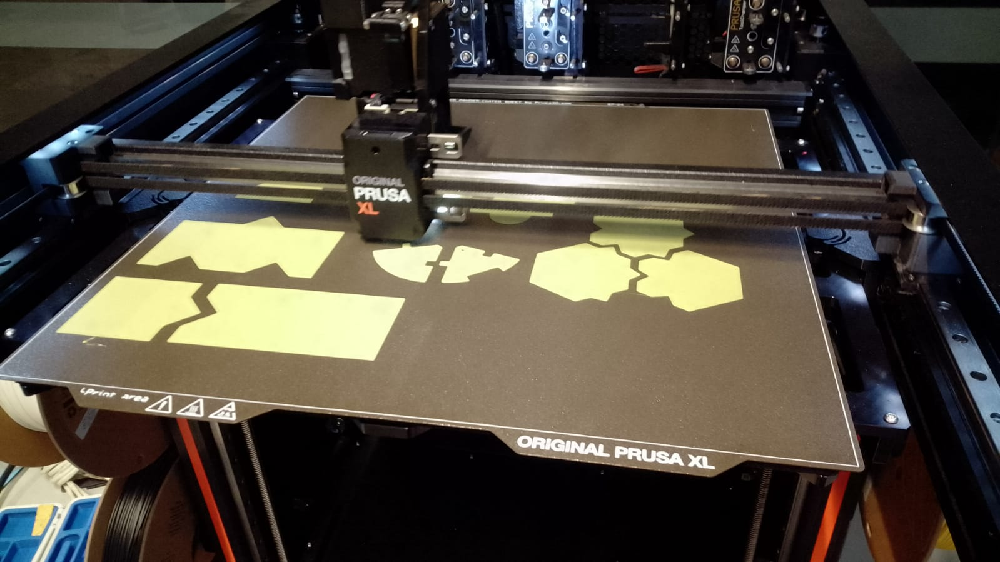
The two first editions of the pieces were as the 3D model intended (luckily). The squares were a bit
questionable to me, but I foundout that the tolerances for these pieces were quite low: if the
'female' trianges turned out to be smaller than the 'male' triangles, the piece would still fit in
it. (The puzzle pieces were another story in terms of that).
V1.1: the square shapes turned out to be less intimidating than thought before. The
pieces were also big enough to identify the individual pieces.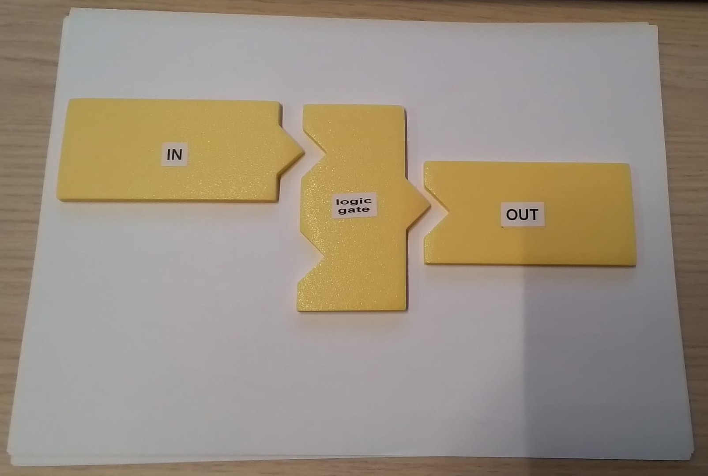
V1.2: the top-view proved the arrow-direction point of before. It feels very logical to
walk with the arrow and 'follow the circuit'
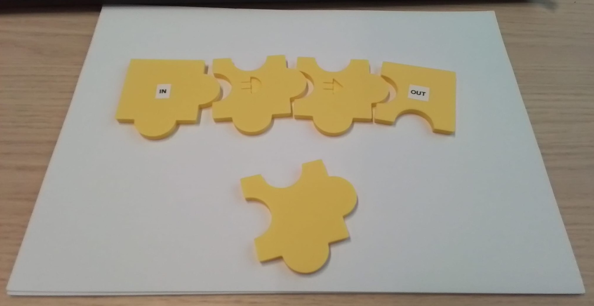
V2.1: the puzzle pieces seemed less friendly than intended. Especially for the female
side of the connectors. Additionally, the logo was engraved in the material, but it seems like
it is hard for
children
to distinguish each symbol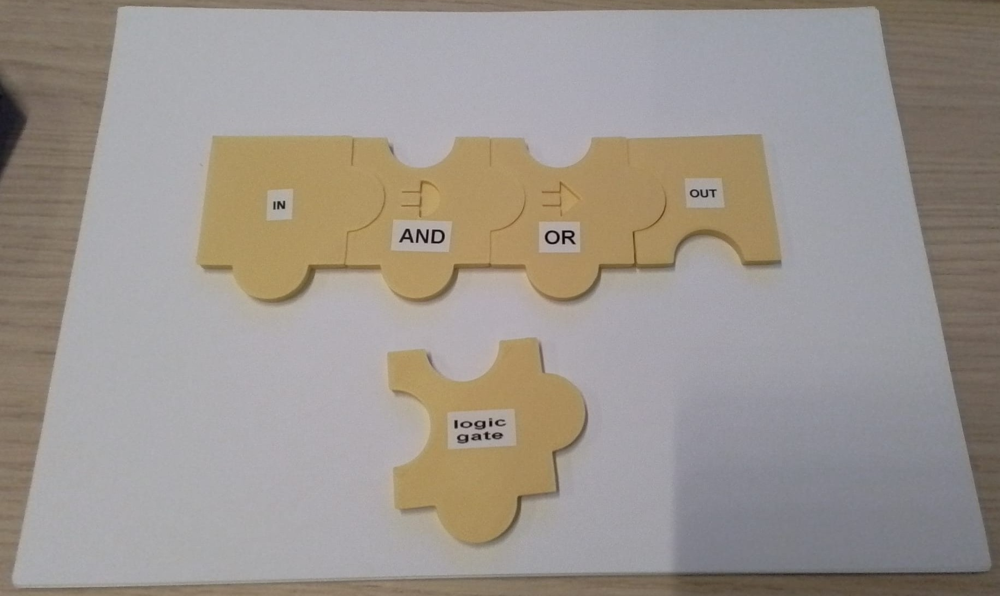
V2.2: functional stickers have been added to describe in 2 ways what the piece is meant
for. (also shown on the previous images)
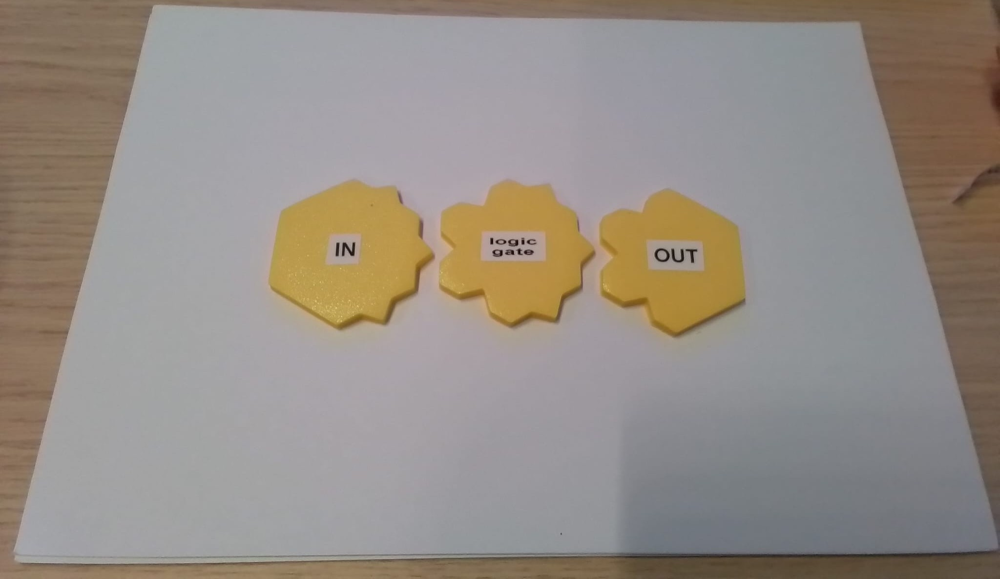
V3: this brings in the sharper angles again... and a lot, resembling...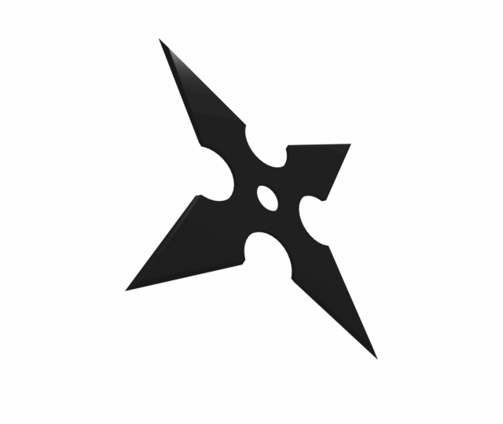
... a ninja star. Not quite the tone I am looking for: rather a
weapon to break something, than to create something.
Physical Realization
Putting the pieces into a context, some information to the users was missing. Even with adding the
text for the ports, what would be a goal the users would work towards to? What are the posibilities?
aka, what is the context for the users to exceed?
Adding instruction exercises, examples and the connecting logic table to it! These cards create
a context for users (seed) that they eventually can transfer to their toolbox. The cards will act as
the boundaries in which the creativity can emerge and what they eventually can exceed.
of this p=building block, for the users to exceed.
The extra information cards provide extra insights in what the logic table for a
specific circuit is and some real-world application, to spark the user in their imagination.
What is this fliplflop used for and how does it work?
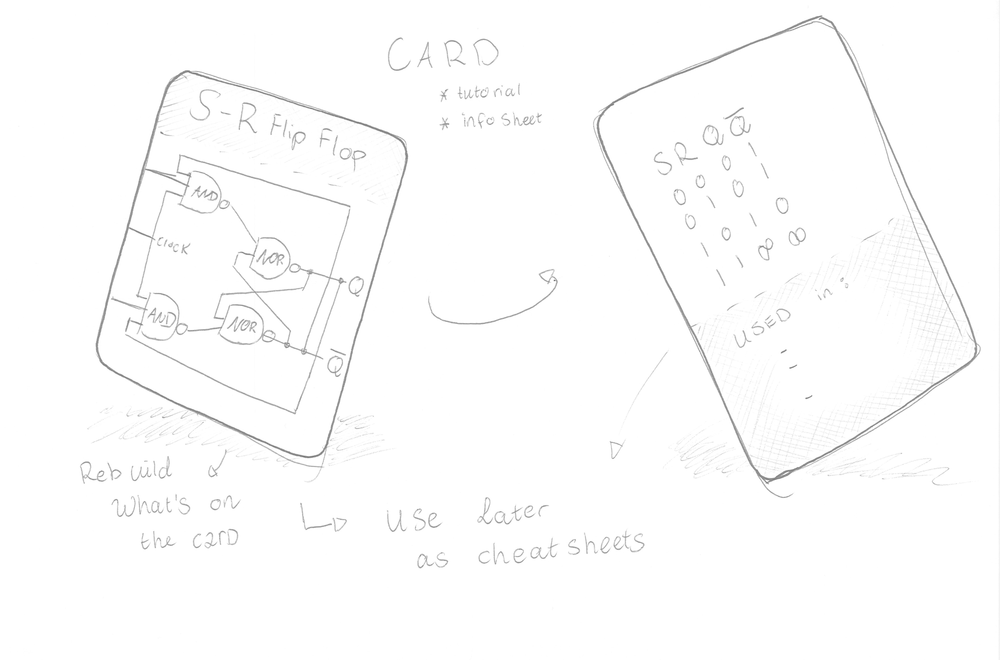
Addition of Information Cards brings in a little more explanation, context and
especially a little guidance on all the possiblities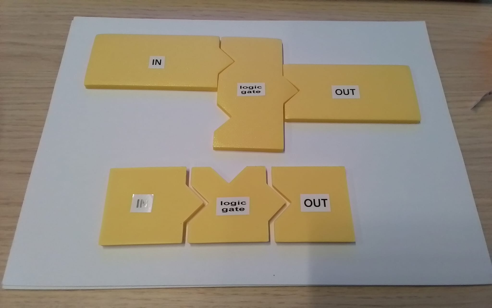
Mixing the intial bricks seemed the solution to represent all the different electronical
components. Some components are bigger than others, hence the size differences for their pieces.
The surprise effect in my final design
For the final iteration, I combined the very first versions: some sensors will be bigger than
the others, hence the dfferent input sizes.
The simplicity of the first pieces is what made them strong in the end: more is less. The
easy overview you get as a user from the arrow-like shapes, and the robustness towards
inconsistent tolerances promised a very durable design.
The cards and the pieces together make way for an AND situation: it only works when
they are together!